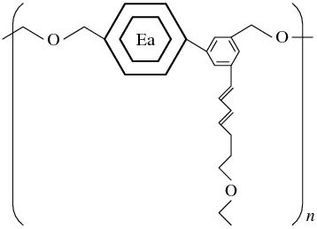
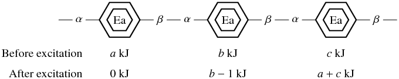

Time Limit: 5 sec
とある研究所で， エネルギー伝達用の媒体の開発をしていた． この媒体は図3に示すような特殊な物質からなる ポリマー構造をなしている．
|  |
| (–α–Ea–β–)n |
| 図3: エネルギー伝達用媒体の構造． |
図の Ea で示した部分がこの媒体のもっとも特徴的な部位の エナジーアキュムレータ (Energy Accumulator) である． このEa基は 1 kJ 幅で離散化された多様なエネルギー状態を取ることができる． あるEa基を励起させると， そのEa基のα側に結合している隣接したEa基に蓄積されている全エネルギーを β側に結合している隣接したEa基に移動させるような効果を持つ 発熱反応が引き起こされる（図4）． この反応の際，励起されるEa基のエネルギーが 1 kJ 消費される． なお，ポリマーの両端に位置するEa基やエネルギー状態が 0 kJ になっている Ea基に対しては励起反応は発生しないこと， およびEa基は十分に大きなエネルギーを蓄えることが可能であることが知られている．
|  |
| 図4: 中央のEa基を励起させたときの反応． |
この性質を利用することでエネルギーの伝達を可能にしようと考えていたのだが， エネルギーを効率よく伝達するには各Ea基を励起させる順番が重要であることに 研究者たちは気がついたのである．
幸い，励起させる順番や回数は任意に制御できるのだが， 彼らには最適な励起手順がわからない． そこで彼らの発想の足がかりとして， 初期状態のエネルギー分布に対して 最右Ea基（β末端からもっとも近いEa基） に蓄えられうる最大のエネルギー量を計算してもらいたい．
入力は複数のデータセットから構成され， 以下のような形式で与えられる．
入力の先頭の整数 N (0 < N ≤ 60) が取り扱う問題のデータセット数であり， その後ろ 2N 行に渡って， それぞれのデータセットごとの情報 Ck が与えられる．
それぞれのデータセット Ck は以下のような形式で 2行に渡り与えられる．
L はそれぞれのデータセットで取り扱う媒体のEa鎖の長さであり， ここで与えられた数だけEa基が直列に結合していることを意味している． その次の行の L 個の整数 Ek は， 長さLのEa鎖のうちα末端を左端に据えたときに 左から数えてk番目のEa鎖にはじめに蓄積されているエネルギー量を kJ単位で示したものである．
ここで， 0 ≤ Ek ≤ 4, 1 ≤ L ≤ 80 であることが保証されている．
出力は各データセットごとに，与えられた状況下での右端Ea鎖に到達可能な 最大エネルギーをkJ単位で，整数値のみを1行で記述すること．
7 1 2 2 1 2 3 4 1 4 3 4 0 4 5 4 1 4 0 4 5 4 1 4 1 4 5 4 2 4 0 4
2 2 8 4 7 12 11